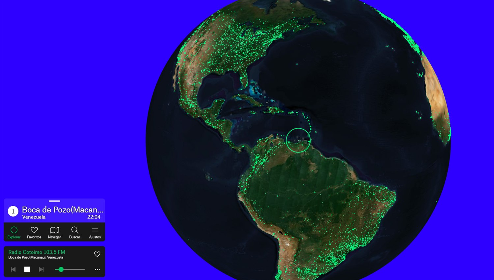

Descobrindo sites, ferramentas e experiências interessantes espalhadas pela internet.
🌐

O mapa vira um dial global: escolha uma cidade, encontre uma estação e comece a ouvir o que está tocando naquele lugar.
Radar Web / Rádio global
Radio Garden permite ouvir rádios de vários lugares do mundo em um globo interativo
Encontre Aqui TechExperiência webMúsica e cultura
Que tal viajar pelo mundo através do rádio? O Radio Garden transforma o planeta em um grande dial, permitindo descobrir músicas, notícias e culturas de diferentes cidades com poucos cliques.
A proposta é simples e muito boa: abrir um mapa-múndi, escolher praticamente qualquer região do planeta e ouvir o que está tocando nas rádios daquele lugar naquele exato momento.
Globo interativoNavegue pelo mapa e encontre estações associadas a cada região.Viagem sonoraSaia de uma rádio brasileira e descubra transmissões de outros continentes.Busca rápidaUse a descoberta de estações quando quiser explorar algo novo.
O site apresenta um globo terrestre interativo que pode ser movimentado livremente. Conforme você navega pelo mapa, diferentes localidades aparecem disponíveis para exploração. Basta selecionar uma delas para encontrar estações de rádio associadas àquela região e começar a ouvir suas transmissões.
A experiência acaba funcionando como uma pequena viagem virtual. Em poucos minutos, você pode sair de uma rádio brasileira e descobrir o que está tocando em cidades da Europa, Ásia, África, América do Norte ou em regiões que provavelmente nunca pensou em procurar.
Um jeito diferente de conhecer outros lugares
Um dos pontos mais interessantes do Radio Garden é justamente a possibilidade de conhecer um pouco da identidade sonora de diferentes cidades.
Dependendo da estação escolhida, você pode encontrar música local, programas de entretenimento, notícias, debates e transmissões em diversos idiomas. A proposta original do projeto está ligada justamente à capacidade do rádio de aproximar pessoas, lugares e culturas através das fronteiras.
Além da navegação pelo globo, o Radio Garden possui recursos de busca e descoberta de estações, incluindo diferentes seleções para quem simplesmente quer explorar algo novo.
Tecnologia simples, mas com uma ótima ideia
O conceito chama atenção porque pega algo bastante tradicional, ouvir rádio, e apresenta de uma forma moderna e visual. Em vez de procurar manualmente sites de emissoras de diferentes países, o usuário pode explorar o planeta e descobrir novas estações enquanto movimenta o mapa.
O Radio Garden surgiu no contexto do projeto internacional de pesquisa Transnational Radio Encounters, com participação dos estúdios Moniker e Studio Puckey. Posteriormente, o projeto passou para o Studio Puckey.
Continue navegando
Achados anteriores.
Quando novos sites entrarem na curadoria, o destaque mais recente ficará acima e os achados anteriores aparecerão aqui, preservando o histórico da seção.
5 ago. 2026
Incredibox: monte uma banda de beatbox em poucos cliques
Arraste sons, combine vozes, desbloqueie refrões animados e transforme o navegador em um pequeno laboratório musical.
O Incredibox é aquele tipo de site que parece simples por fora, mas prende a atenção rápido: você escolhe um estilo musical, arrasta ícones para personagens animados e cria uma mistura de batidas, efeitos, melodias e vozes direto no navegador.
A graça está no ritual de experimentar: um som entra, outro sai, um refrão animado aparece quando a combinação encaixa e a composição vira um convite rápido para brincar com ritmo sem precisar saber teoria musical.